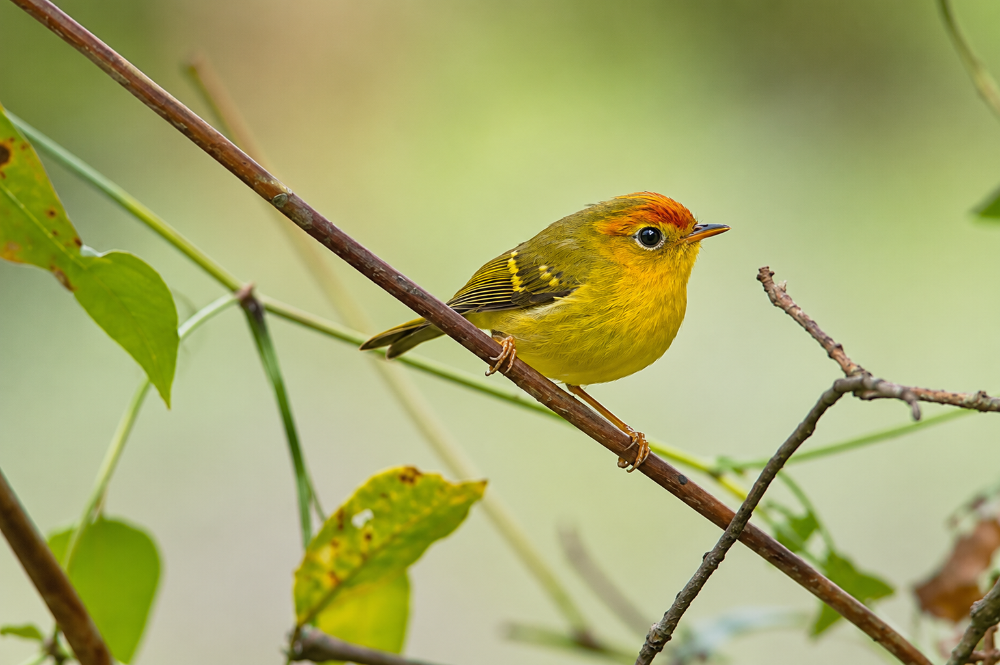

River cruises, hornbills, kingfishers, and rare wetland birds.
Posted on 17/01/2025
Kinabatangan: A Birdwatcher’s Paradise with River Cruises
Nestled in the heart of Borneo, the Kinabatangan River offers
amazing chances to spot rare birds and wildlife.
Read More ↓

Cool highlands, quiet forest hides, and rare endemic birds.
Posted on 17/01/2025
Trusmadi Tambunan Hide: A Hidden Gem for Birdwatchers
Tucked away in Sabah’s highlands, Trusmadi Tambunan Hide is
perfect for bird photographers and birdwatchers.
Read More ↓

Rare, shy, beautiful, and one of Sabah’s rainforest jewels.
Posted on 17/01/2025
The Elusive Bornean Peacock-Pheasant
Deep in Sabah’s rainforest lives one of Borneo’s most captivating
and elusive birds.
Read More ↓
KINABATANGAN RIVER
Kinabatangan: A Birdwatcher’s Paradise with River Cruises
Posted on 17/01/2025
Nestled in the heart of Borneo, the Kinabatangan River is a true
birdwatching paradise, offering opportunities to spot rare and exotic
bird species. Guided river cruises take visitors through lush rainforest
habitats where hornbills, kingfishers, broadbills, storks, and other
unique wildlife thrive.
Birding Along the Kinabatangan River
- Black-and-Red Broadbill — A photogenic species often seen near the water’s edge.
- Storm’s Stork — One of the rarest storks in the world.
- Oriental Darter — Often seen drying its wings on branches.
- Rhinoceros Hornbill — One of Borneo’s most iconic birds.
- Blue-eared Kingfisher — A small but brightly coloured riverbank bird.
Best Time to Visit
Kinabatangan is a year-round birding destination, but March to October
is often preferred because dry season conditions can make birdwatching easier.
TRUSMADI TAMBUNAN HIDE
Trusmadi Tambunan Hide: A Hidden Gem for Birdwatchers
Posted on 17/01/2025
Tucked away in the cool highlands of Sabah, the Trusmadi Tambunan Hide
is a hidden gem for birdwatchers seeking rare and endemic species.
Its montane forest habitat gives birders a chance to observe unique
Bornean birds in a quieter and more focused environment.
Birds You May Encounter
- Bornean Barbet — Often heard before it is seen.
- Bornean Banded Pitta — A colourful forest-floor bird.
- Whitehead’s Broadbill — A rare and sought-after green broadbill.
- Everett’s Thrush — A secretive ground-dwelling species.
This location is ideal for photographers who prefer a slower, quieter,
and more patient birdwatching experience.
RARE BORNEAN SPECIES
The Elusive Bornean Peacock-Pheasant
Posted on 17/01/2025
Deep within Sabah’s lush rainforest lives one of Borneo’s most captivating
birds: the Bornean Peacock-Pheasant. Rarely seen and beautifully marked
with iridescent plumage, this shy forest bird is a dream sighting for
serious birders.
A Symbol of Sabah’s Rainforest
The Bornean Peacock-Pheasant represents the richness and fragility of
Sabah’s biodiversity. Protecting this bird also means protecting the
rainforest habitat that many other species rely on.
Exclusive Expedition Idea
A focused expedition may include locations such as Danum Valley,
Kinabatangan, and Deramakot Forest Reserve, with guided birdwatching,
accommodation, meals, private transport, and park entry permits.
Want to See These Birds Yourself?
Let us help you plan a birdwatching journey through Borneo’s forests,
rivers, and hidden birding locations.
Explore Packages →
↑ Top